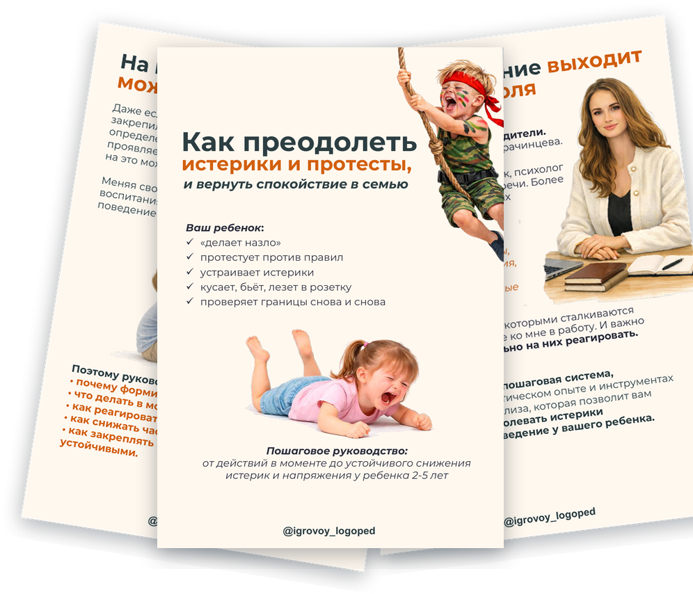

Главная / Продукты / Руководство
Руководство
Как преодолеть истерики и протесты у ребёнка
Пошаговый алгоритм для родителей на основе принципов ABA. Выстроен на работе с протестным поведением в десятках семей.
Для кого
Если
- Ребёнок падает на пол в магазине, кричит на любое «нет», не выполняет просьбы
- Вырывается, дерётся или бьёт братьев и сестёр
- Вы избегаете детских площадок из-за стыда
- По-хорошему не работает, а строже становится только хуже

Что внутри
Вы поймёте
- Что делать во время истерики
- Как действовать при агрессии, укусах, ударах, бросании
- Как работать с повторяющимся нежелательным поведением
- Как снизить интенсивность и частоту вспышек
- Как помочь ребёнку научиться эмоциональной устойчивости
Как пользоваться
Система, применимая сразу
Это целая система по работе с протестным поведением. Она основана на принципах ABA и применима сразу.
Стоимость
999 ₽
Формат: цифровое руководство.
Купить руководство
Нажмите и выберите мессенджер, в который удобнее написать.
Вопросы
Частые вопросы
Для каких ситуаций подходит руководство?
Для протестного поведения: истерики, агрессия, укусы, удары, бросание вещей, повторяющееся нежелательное поведение.
Заменяет ли руководство консультацию?
Руководство для самостоятельной работы. Если ситуация сложная или нужна обратная связь, подойдёт консультация или сопровождение.